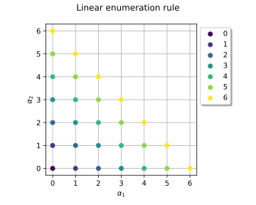
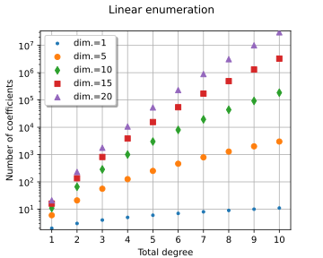
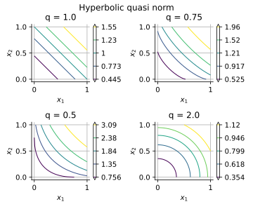
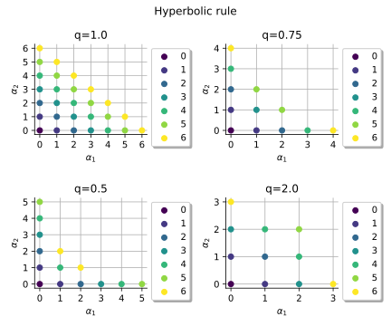
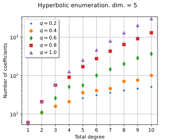
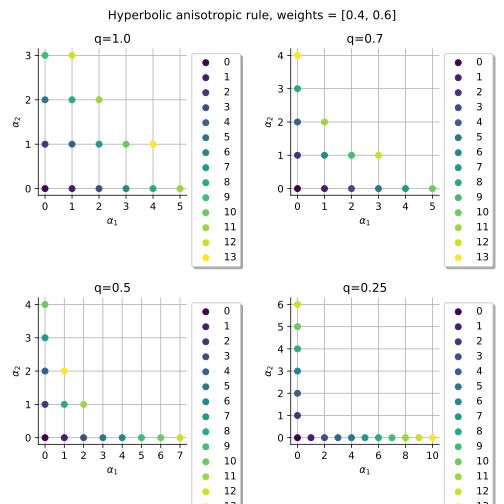
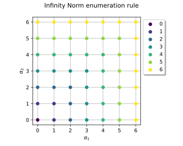

Note
Go to the end to download the full example code.
Plot enumeration function¶
This example illustrates the enumeration functions which are bijections between ![\Nset]() into
into ![\Nset^\inputDim]() .
Refer to Multivariate indices enumeration functions to get the precise description of the enumerate functions. We detail here the bijections:
.
Refer to Multivariate indices enumeration functions to get the precise description of the enumerate functions. We detail here the bijections:
linear enumeration function;
hyperbolic enumeration function;
anisotropic hyperbolic enumeration function;
infinity norm enumeration function.
These bijections are used in the functional chaos expansion setting.
In order to build up a multivariate basis ![\{\psi_{\vect{\alpha}},\vect{\alpha} \in \Nset^\inputDim\}]() by tensorization of univariate basis terms, we need to enumerate the multi-indices
by tensorization of univariate basis terms, we need to enumerate the multi-indices ![\vect{\alpha} \in \Nset^\inputDim]() .
In this example, we interprete the impact of the different enumeration functions within the functional chaos expansion setting.
.
In this example, we interprete the impact of the different enumeration functions within the functional chaos expansion setting.
import openturns as ot
import openturns.viewer as otv
import math as m
import matplotlib.colors as mcolors
import matplotlib.pyplot as plt
The simplest way to generate multi-indices is to list them by increasing length. If the basis is polynomial, then the length corresponds to the total degree of the polynomial. Within a strata, the multi-indices are ordered according to the “graded reverse lexicographic ordering” (see [sullivan2015]). This is named the linear enumeration rule in the library.
We print the ordered elements in dimension 4 to illustrate the ordering of the multi-indices. We only consider the 4 first strata and we print their associated length (which are equal to 0 up to 3).
dim = 4
enum_func = ot.LinearEnumerateFunction(dim)
td_prev = 0
print("# | multi-index | length")
print("---+-----------------+-------------")
i_max = enum_func.getStrataCumulatedCardinal(3)
for i in range(i_max):
multi_index = enum_func(i)
td = sum(multi_index)
if td > td_prev:
td_prev = td
print("---+-----------------+-------------")
print(f"{i:2} | {multi_index} | {td}")
# | multi-index | length
---+-----------------+-------------
0 | [0,0,0,0] | 0
---+-----------------+-------------
1 | [1,0,0,0] | 1
2 | [0,1,0,0] | 1
3 | [0,0,1,0] | 1
4 | [0,0,0,1] | 1
---+-----------------+-------------
5 | [2,0,0,0] | 2
6 | [1,1,0,0] | 2
7 | [1,0,1,0] | 2
8 | [1,0,0,1] | 2
9 | [0,2,0,0] | 2
10 | [0,1,1,0] | 2
11 | [0,1,0,1] | 2
12 | [0,0,2,0] | 2
13 | [0,0,1,1] | 2
14 | [0,0,0,2] | 2
---+-----------------+-------------
15 | [3,0,0,0] | 3
16 | [2,1,0,0] | 3
17 | [2,0,1,0] | 3
18 | [2,0,0,1] | 3
19 | [1,2,0,0] | 3
20 | [1,1,1,0] | 3
21 | [1,1,0,1] | 3
22 | [1,0,2,0] | 3
23 | [1,0,1,1] | 3
24 | [1,0,0,2] | 3
25 | [0,3,0,0] | 3
26 | [0,2,1,0] | 3
27 | [0,2,0,1] | 3
28 | [0,1,2,0] | 3
29 | [0,1,1,1] | 3
30 | [0,1,0,2] | 3
31 | [0,0,3,0] | 3
32 | [0,0,2,1] | 3
33 | [0,0,1,2] | 3
34 | [0,0,0,3] | 3
We define a function that plots the successive stratas with different colors.
def draw_stratas(enum_func, maximum_strata_index):
"""
Plot enumeration rule by stratas.
Parameters
----------
enum_func : openturns.EnumerateFunction
Enumerate function
Returns
-------
graph : openturns.Graph
Plot of the multi-indices colored by stratas
"""
if maximum_strata_index < 1:
raise ValueError(
f"maximum_strata_index must be >= 1, got {maximum_strata_index}"
)
cmap = plt.get_cmap("viridis")
if maximum_strata_index == 1:
viridis_palette = [mcolors.to_hex(cmap(0.0))]
else:
viridis_palette = [
mcolors.to_hex(cmap(i / (maximum_strata_index - 1)))
for i in range(maximum_strata_index)
]
graph = ot.Graph("", "$\\alpha_1$", "$\\alpha_2$", True)
if isinstance(enum_func, ot.LinearEnumerateFunction):
graph.setTitle("Linear enumeration rule")
elif isinstance(enum_func, ot.HyperbolicAnisotropicEnumerateFunction):
graph.setTitle(f"q={enum_func.getQ()}")
elif isinstance(enum_func, ot.NormInfEnumerateFunction):
graph.setTitle("Infinity Norm enumeration rule")
offset = 0
for strata_index in range(maximum_strata_index):
strata_cardinal = enum_func.getStrataCardinal(strata_index)
sample_in_layer = [enum_func(idx + offset) for idx in range(strata_cardinal)]
offset += strata_cardinal
cloud = ot.Cloud(sample_in_layer)
cloud.setLegend(str(strata_index))
cloud.setPointStyle("circle")
cloud.setColor(viridis_palette[strata_index])
graph.add(cloud)
graph.setIntegerXTick(True)
graph.setIntegerYTick(True)
graph.setLegendPosition("upper left")
graph.setLegendCorner((1.0, 1.0))
return graph
We consider the dimension 2 and we plot the first strata.

When the number of input dimensions of a functional chaos expansion (FCE) increases,
each multi-index corresponds to a coefficient in the expansion.
Hence, the number of multi-indices represents the number of coefficients in the FCE.
We plot the number of terms in the basis depending on the maximum total length
for several dimension values.
We observe the exponential increase of the number of terms with the dimension
![\inputDim]() (curse of dimensionality).
(curse of dimensionality).
graph = ot.Graph("Linear enumeration", "Total degree", "Number of coefficients")
degree_maximum = 10
list_of_dimensions = [1, 5, 10, 15, 20]
point_styles = ["bullet", "circle", "fdiamond", "fsquare", "triangleup"]
for i, dimension in enumerate(list_of_dimensions):
data = [
[degree, m.comb(degree + dimension, degree)]
for degree in range(1, 1 + degree_maximum)
]
number_of_coeff_array = ot.Sample(data)
cloud = ot.Cloud(number_of_coeff_array)
cloud.setPointStyle(point_styles[i])
cloud.setLegend(f"dim.={dimension}")
graph.add(cloud)
graph.setLegendPosition("upper left")
graph.setIntegerXTick(True)
graph.setLogScale(ot.GraphImplementation.LOGY)
_ = otv.View(graph, figure_kw={"figsize": (5, 4)})

def build_q_quasinorm_function(weights, q):
"""Returns a parametric function representing the $q$-quasi-norm of a
two-dimensional vector weighted by the provided coefficients."""
if any(w <= 0 for w in weights):
raise ValueError("All weights must be strictly positive.")
if len(weights) != 2:
raise ValueError(f"The number of weights should be 2, but is {len(weights)}")
if q <= 0.0:
raise ValueError(f"The parameter q should be greater than 0, but is {q}")
q_norm_function = ot.SymbolicFunction(
["x1", "x2", "w1", "w2", "q"], ["((w1 * x1)^q + (w2 * x2)^q)^(1 / q)"]
)
q_norm_parametric = ot.ParametricFunction(
q_norm_function, [2, 3, 4], [weights[0], weights[1], q]
)
return q_norm_parametric
The hyperbolic enumeration function is based on the q-quasi-norm.
This function is a quasi-norm for ![q \in (0,1)]() and is a norm for
and is a norm for ![q \geq 1]() .
We plot the hyperbolic quasi norm for different values of
.
We plot the hyperbolic quasi norm for different values of ![q]() .
With
.
With ![q = 1]() (with isotropy), stratas are hyperplanes:
we recover the linear enumeration rule.
(with isotropy), stratas are hyperplanes:
we recover the linear enumeration rule.
def draw_q_quasinorm(q):
"""Generates a contour plot of the Lq-quasi-norm for a given exponent q in a
two-dimensional space."""
weights = [1.0, 1.0]
f = build_q_quasinorm_function(weights, q)
graph = f.draw([0.0] * 2, [1.0] * 2)
graph.setTitle(f"q = {q}")
graph.setXTitle("$x_1$")
graph.setYTitle("$x_2$")
return graph
dln = ot.ResourceMap.GetAsUnsignedInteger("Contour-DefaultLevelsNumber")
ot.ResourceMap.SetAsUnsignedInteger("Contour-DefaultLevelsNumber", 5)
grid = ot.GridLayout(2, 2)
grid.setGraph(0, 0, draw_q_quasinorm(1.0))
grid.setGraph(0, 1, draw_q_quasinorm(0.75))
grid.setGraph(1, 0, draw_q_quasinorm(0.5))
grid.setGraph(1, 1, draw_q_quasinorm(2.0))
ot.ResourceMap.SetAsUnsignedInteger("Contour-DefaultLevelsNumber", dln)
grid.setTitle("Hyperbolic quasi norm")
_ = otv.View(grid, axes_kw={"aspect": "equal"}, figure_kw={"figsize": (5, 4)})
plt.subplots_adjust(wspace=0.7, hspace=0.7)

def drawHyperbolicStratas(dim, q, maximum_strata_index=7):
"""Generates a plot of the **isotropic** hyperbolic enumeration function
strata up to a specified maximum index."""
enumerateFunction = ot.HyperbolicAnisotropicEnumerateFunction(dim, q)
return draw_stratas(enumerateFunction, maximum_strata_index)
We plot the multi-indices of the hyperbolic isotropic enumeration rule by stratas.
The lower the value of the lower the number of interactions terms in stratas.
grid = ot.GridLayout(2, 2)
grid.setGraph(0, 0, drawHyperbolicStratas(dim, 1.0))
grid.setGraph(0, 1, drawHyperbolicStratas(dim, 0.75))
grid.setGraph(1, 0, drawHyperbolicStratas(dim, 0.5))
grid.setGraph(1, 1, drawHyperbolicStratas(dim, 2.0))
grid.setTitle("Hyperbolic rule")
_ = otv.View(grid, axes_kw={"aspect": "equal"}, figure_kw={"figsize": (6, 5)})
plt.subplots_adjust(wspace=0.7, hspace=0.7)

Interaction multi-indices are presented in the center of the ![(\alpha_1, \alpha_2)]() space.
We see that when the quasi-norm parameter is close to zero, the enumeration rule
shows less interaction multi-indices.
Instead, multi-indices close to the axes represent multivariate polynomials
with high marginal degrees.
When is close to zero, these polynomials with high marginal degrees appear
sooner with the hyperbolic enumeration rule.
space.
We see that when the quasi-norm parameter is close to zero, the enumeration rule
shows less interaction multi-indices.
Instead, multi-indices close to the axes represent multivariate polynomials
with high marginal degrees.
When is close to zero, these polynomials with high marginal degrees appear
sooner with the hyperbolic enumeration rule.
We plot the number of terms in the basis depending on the maximum total degree
in dimension ![d = 5]() for several -quasi-norm values.
We observe that the gap between high and low values of can lead to a gap
in the numbers of terms of an order of magnitude.
for several -quasi-norm values.
We observe that the gap between high and low values of can lead to a gap
in the numbers of terms of an order of magnitude.
dim = 5
graph = ot.Graph(
f"Hyperbolic enumeration. dim. = {dim}",
"Total degree",
"Number of coefficients",
True,
)
degree_maximum = 10
q_list = [0.2, 0.4, 0.6, 0.8, 1.0]
point_styles = ["bullet", "circle", "fdiamond", "fsquare", "triangleup"]
for i, q in enumerate(q_list):
enum_func = ot.HyperbolicAnisotropicEnumerateFunction(dim, q)
data = [
[p, enum_func.getMaximumDegreeCardinal(p)] for p in range(1, 1 + degree_maximum)
]
cloud = ot.Cloud(data)
cloud.setPointStyle(point_styles[i])
cloud.setLegend(f"$q={q}$")
graph.add(cloud)
graph.setLegendPosition("upper left")
graph.setIntegerXTick(True)
graph.setLogScale(ot.GraphImplementation.LOGY)
_ = otv.View(graph, figure_kw={"figsize": (5, 4)})

def drawAnisotropicHyperbolicStratas(weights, q, maximum_strata_index=14):
"""Generates a plot of the anisotropic hyperbolic enumeration function
strata up to a specified maximum index."""
enumerateFunction = ot.HyperbolicAnisotropicEnumerateFunction(weights, q)
return draw_stratas(enumerateFunction, maximum_strata_index)
We plot the multi-indices of the hyperbolic anisotropic enumeration rule by stratas. This enumerate function emphasizes multi-indices whose components are larger when the associated weights are smaller.
grid = ot.GridLayout(2, 2)
weights = [0.4, 0.6]
grid.setGraph(0, 0, drawAnisotropicHyperbolicStratas(weights, 1.0))
grid.setGraph(0, 1, drawAnisotropicHyperbolicStratas(weights, 0.7))
grid.setGraph(1, 0, drawAnisotropicHyperbolicStratas(weights, 0.5))
grid.setGraph(1, 1, drawAnisotropicHyperbolicStratas(weights, 0.25))
grid.setTitle("Hyperbolic anisotropic rule, weights = [0.4, 0.6]")
_ = otv.View(grid, axes_kw={"aspect": "equal"}, figure_kw={"figsize": (7, 7)})
plt.subplots_adjust(wspace=0.7, hspace=0.7)

Now we use the infinity norm enumeration function. We illustrate the enumeration in dimension 2. We plot the first stratas.

We print the 3 first stratas in dimension 3.
print("# | multi-index ")
print("---+-------------")
enum_func = ot.NormInfEnumerateFunction(3)
i_max = enum_func.getStrataCumulatedCardinal(3)
for i in range(i_max):
multi_index = enum_func(i)
print(f"{i:2} | {multi_index}")
# | multi-index
---+-------------
0 | [0,0,0]
1 | [1,0,0]
2 | [0,1,0]
3 | [1,1,0]
4 | [0,0,1]
5 | [1,0,1]
6 | [0,1,1]
7 | [1,1,1]
8 | [2,0,0]
9 | [2,1,0]
10 | [0,2,0]
11 | [1,2,0]
12 | [2,2,0]
13 | [2,0,1]
14 | [2,1,1]
15 | [0,2,1]
16 | [1,2,1]
17 | [2,2,1]
18 | [0,0,2]
19 | [1,0,2]
20 | [2,0,2]
21 | [0,1,2]
22 | [1,1,2]
23 | [2,1,2]
24 | [0,2,2]
25 | [1,2,2]
26 | [2,2,2]
27 | [3,0,0]
28 | [3,1,0]
29 | [3,2,0]
30 | [0,3,0]
31 | [1,3,0]
32 | [2,3,0]
33 | [3,3,0]
34 | [3,0,1]
35 | [3,1,1]
36 | [3,2,1]
37 | [0,3,1]
38 | [1,3,1]
39 | [2,3,1]
40 | [3,3,1]
41 | [3,0,2]
42 | [3,1,2]
43 | [3,2,2]
44 | [0,3,2]
45 | [1,3,2]
46 | [2,3,2]
47 | [3,3,2]
48 | [0,0,3]
49 | [1,0,3]
50 | [2,0,3]
51 | [3,0,3]
52 | [0,1,3]
53 | [1,1,3]
54 | [2,1,3]
55 | [3,1,3]
56 | [0,2,3]
57 | [1,2,3]
58 | [2,2,3]
59 | [3,2,3]
60 | [0,3,3]
61 | [1,3,3]
62 | [2,3,3]
63 | [3,3,3]
Display the graphs.